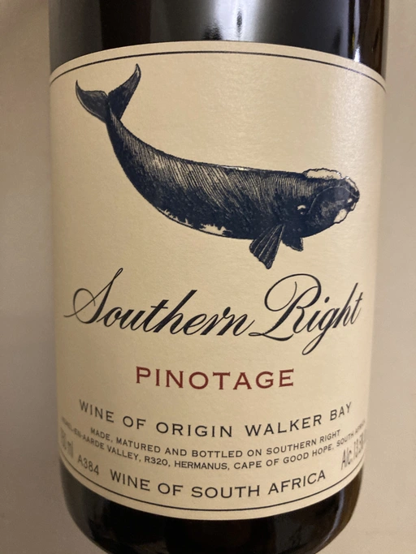

- Type
- Red Still, Dry
- Producer
- Southern Right
- Vintage
- 2019
- Location
- South Africa, WO Walker Bay
- Grapes
- Pinotage
- Alcohol
- 13.5
- Sugar
- 1.8
- Price
- 683 UAH
- Cellar
- N/A
Southern Right is re-defining Pinotage with this intense classically styled, clay-grown wine, packed with complex berry fruit, beautiful tannins and subtle wood spice. Full ripeness and the longer hang-time afforded by cooler sites, combined with the complex, more classic fruit aromas and structure resulting from clay-rich soil, make this wine a highly individual expression of South Africa’s unique grape variety.
Southern Right
Producer
Side project of Hamilton Russell Vineyards.
Ratings
2021-04-26 - 8.00
It’s always nice to have a conversation with wine that has character and content, wine that evolves over the evening. When opened, it bursted with raspberries and vanilla, over short time bouquet was enriched by blackberry, dusty notes and some subtle hints of spices and barnyard. Moderate fruitiness, firm structure, fresh and medium-bodied. A little bit too young, but hey, it’s a wonderful wine by wonderful producer.